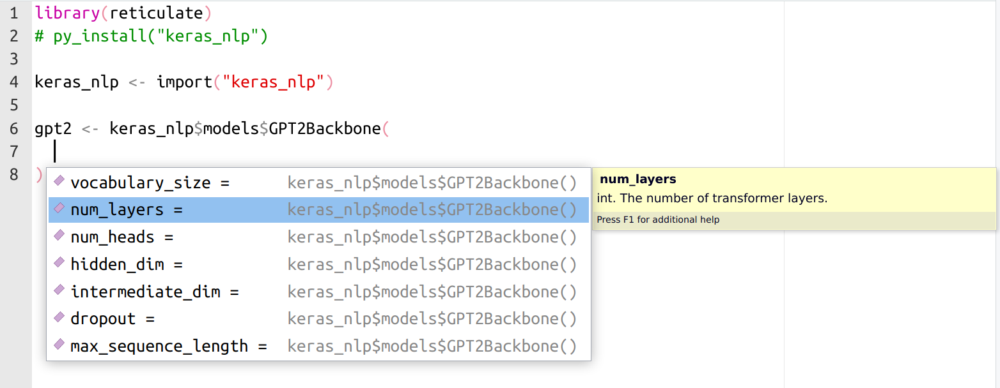

2023-06-06
We are pleased to announce that reticulate version 1.29 is now available on CRAN. This new release brings major new features that improve ergonomics and diagnostics.
R operators +, -, *, /, ^, %%, %/%, &, |, !, %*%. ==, !=, <, <=, >=, > all now work with all Python objects. Any equivalent expression in Python now works identically in R. For example, multiply two NumPy arrays in R with *:
library(reticulate)
np <- import("numpy", convert = FALSE)
x <- np$array(1:5)
y <- np$array(6:10)
x * yarray([ 6, 14, 24, 36, 50])Or concatenate two Python strings with +:
py_string <- r_to_py("reticulate is")
py_string + " great!"'reticulate is great!'Or build up file paths with / using Python’s pathlib:
home <- import("pathlib")$Path("/home")
home / 'is' / 'here'PosixPath('/home/is/here')R functions converted from a Python callable now match the original Python function signature. This means that converted Python functions in R now work with all the R-native autocompletion handlers, just like regular R functions.

Converted Python functions also now take advantage of rlang’s dynamic dots, allowing for some Pythonic sugar equivalents in R, like:
splicing (unpacking) arguments: fn(!!!args) (equivalent to fn(*args, **kwargs) in Python)
ignoring an empty final argument in function calls (like what happens in Python)
There are major enhancements to error and exception handling.
Working with reticulate does not just mean calling into Python from R. It means building complete solutions that freely pick from the runtime and language that is best for that particular task, potentially switching between languages multiple times within a single expression. In practice, that means we have evaluation stacks with interleaving R and Python frames: R calling into a Python function, which calls back into R, which calls back into Python, etc.
When an R error is signaled, or a Python exception is raised, reticulate now presents a full accounting of both Python and R tracebacks. This accounting comes complete with a new print method for py_last_error() that presents source-code file locations for each frame. These are displayed as clickable links in the RStudio IDE that quickly lead you to the exact line where the error occurred.
This is best illustrated with a non-toy example. Imagine you are working on a large language model using TensorFlow/Keras in R (via reticulate), and, deep in the Transformer architecture, in the call() method of an Attention layer, you accidentally add a stray comma in an expression like x[,i,], resulting in a tensor shape mismatch. Tracking down an error like this in a complicated project without a detailed traceback can be difficult—it involves a stack with countless interleaving of R and Python evaluation frames. Complicating matters, some frames intercept, modify, or even completely replace the Exception/Error object (e.g., a function that was autographed and compiled by TensorFlow). Despite all this, with reticulate 1.29, this is what you might now see:
Under the hood, this new feature is powered by a new r_to_py() and py_to_r() pair of routines that convert between R errors and Python Exceptions. An R error, propagating and unwinding the call stack, upon encountering a Python frame, enters the Python runtime as a bonafide Python Exception containing attributes with full R traceback information, and vice versa. The same error/exception object traverses the stack, plugging in directly to the language native idioms and constructs for them, like: invoking handlers established with on.exit(), tryCatch() and withCallingHandlers() in R or try: ...; except: ...; finally: ... blocks in Python.
This means that you can use R signal handling routines to catch Python exceptions:
tryCatch(py_eval("1/0"),
python.builtin.ZeroDivisionError = function(e) {
message("Can't divide by zero in Python")
})Can't divide by zero in PythonOr raise a typed Python Exception with base::stop() in R and catch it with try: ... except ... in Python:
def call_and_maybe_catch(callback):
try:
return callback()
except ZeroDivisionError:
return "This is not the Infinity you're looking for..."py$call_and_maybe_catch(\() py_eval("1/0"))[1] "This is not the Infinity you're looking for..."py$call_and_maybe_catch(\() stop(py_eval("ZeroDivisionError()")))[1] "This is not the Infinity you're looking for..."These are just the highlights from an overstuffed grab-bag of fixes and enhancements in this release—check out the NEWS file for a full accounting.
Thanks for reading!